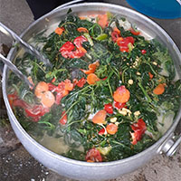
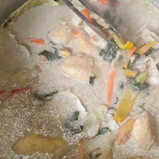

AIGIR DISH
 
INGREDIENTS
5 to 10 bundles variuos types of greens
50 gram sliced carrots
10 gram gated yellow ginger
10 gram grated garlic
50 gram meshed tomatoes
1.5 ltr coconut milk
1.4 kg chicken broiler pieces or any edible protein; optional
STEPS
heat stones over a fire
the fire must be 120 deg celcius
place 3 or 4 hot stones inside cooker pot
Place all the chicken pieces or any edible protein into the cooker pot and pour 500ml of coconut milk
add some more hot stones into the cooker pot and also add all greens into the cooker pot
pour remaing 1ltr milk and add all spices
allow to cook on steam by closing the cooker pot lid
After 2min open cooker pot lid and allow to cool